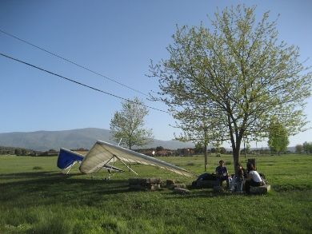

Alojamiento y conductores
La organización os puede proporcinar tanto alojamiento en casas particulares en la zona como conductores a un precio razonable. Si estáis interesados contactar con Armando (686 13 69 94, kadatan@hotmail.com).
En la zona existen multitud de casas rurales y campings. La mayor parte de la oferta existente en Pedro Bernardo la podéis encontrar en la página de Alojamiento del Club de Vuelo y Montaña.